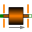
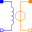

PermeanceActuatorDetailed actuator model for rough magnetic design of actuator and system simulation |
Diagram
{kind=link}
Information
This information is part of the Modelica Standard Library maintained by the Modelica Association.
In the ConstantActuator model the force F is strictly proportional to the current i as indicated by the converter constant c. However, there is an additional non-linear force component in such an actuator that is due to the dependency of the coil inductance L on the armature position x. The inductance increases as the armature moves into the stator. The total force is
1 2 dL
F = - i -- + c i
2 dx
Both force components are properly considered with a simple permeance model as shown in the figures below. Figure (a) illustrates the dimensions of the axis-symmetric moving coil actuator that are needed in the permeance model. Figure (b) shows partitioning into flux tubes and the permanent magnetic field without current. G_ma and G_mb both are the permeances resulting from a series connection of the permanent magnet and air gap sections. The field plot of the coil-imposed mmf is shown in figure (c) without the permanent magnetic mmf (H_cB=0). The placement of the magnetic network components in figure (d) retains the geometric structure of the actuator. In figure (e), the permeance model is restructured and thus simplified.

Parameters (13)
| N |
Value: 140 Type: Real Description: Number of turns |
|---|---|
| R |
Value: 2.86 Type: Resistance (Ω) Description: Coil resistance |
| r_core |
Value: 12.5e-3 Type: Radius (m) Description: Radius of ferromagnetic stator core |
| l_PM |
Value: 3.5e-3 Type: Length (m) Description: Radial thickness of permanent magnet ring |
| t |
Value: 0.02 Type: Length (m) Description: Axial length of permanent magnet ring and air gap respectively |
| l_air |
Value: 3e-3 Type: Length (m) Description: Total radial length of armature air gap |
| l_FeOut |
Value: 4e-3 Type: Length (m) Description: Radial thickness of outer back iron (for estimation of leakage permeance) |
| material |
Value: Material.HardMagnetic.BaseData() Type: BaseData Description: Ferromagnetic material characteristics |
| m_a |
Value: 0.012 Type: Mass (kg) Description: Mass of armature |
| c |
Value: 1e11 Type: TranslationalSpringConstant (N/m) Description: Spring stiffness between impact partners |
| d |
Value: 400 Type: TranslationalDampingConstant (N·s/m) Description: Damping coefficient between impact partners |
| x_min |
Value: -4e-3 Type: Position (m) Description: Position of stopper at minimum armature position |
| x_max |
Value: 4e-3 Type: Position (m) Description: Position of stopper at maximum armature position |
Connectors (3)
| p |
Type: PositivePin Description: Electrical connector |
|
|---|---|---|
| n |
Type: NegativePin Description: Electrical connector |
|
| flange |
Type: Flange_b Description: Flange of component |
Components (10)
| material |
Type: BaseData Description: Ferromagnetic material characteristics |
|
|---|---|---|
| mmf_PM |
Type: ConstantMagneticPotentialDifference Description: Permanent magnet's magnetomotive force |
|
|  | armature |
Type: TranslatoryArmatureAndStopper Description: Inertia of moving coil + coil carrier; stoppers at end of stroke range |
| r |
Type: Resistor |
|
| ground |
Type: Ground |
|
|  | coil |
Type: ElectroMagneticConverter |
| g_ma |
Type: HollowCylinderRadialFlux |
|
| g_mb |
Type: HollowCylinderRadialFlux |
|
| g_mLeak1 |
Type: CoaxCylindersEndFaces Description: Leakage between coaxial end planes of ferromagnetic stator core and outer back iron |
|
| g_mLeak2 |
Type: HalfCylinder Description: Leakage between edges of ferromagnetic stator core and outer back iron |
Used in Examples (3)
|
Modelica.Magnetic.FluxTubes.Examples.MovingCoilActuator Comparison of the force-current characteristics of both converter models with armature blocked at mid-position |
|
|
Modelica.Magnetic.FluxTubes.Examples.MovingCoilActuator Force-stroke characteristic of the permeance model at constant current |
|
|
Modelica.Magnetic.FluxTubes.Examples.MovingCoilActuator Armature stroke of both moving coil actuator models after a voltage step at time t=0 |